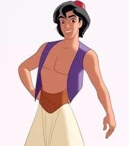
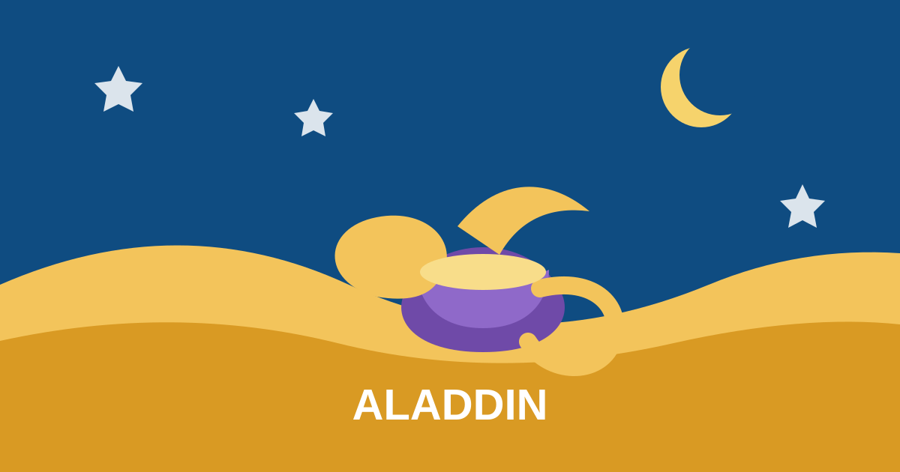
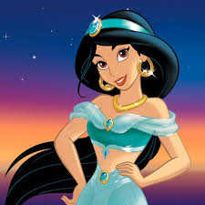
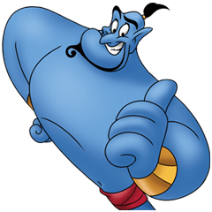
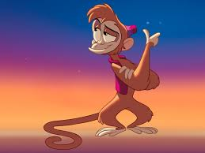
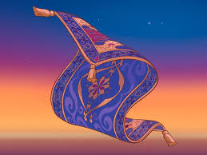
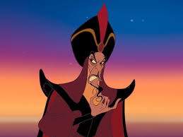

アラジン

明るく行動力のある青年です。 仲間を大切にしながら、自分らしい未来を探して進みます。
「大切なのは、心まで変えないこと。」
砂漠の街を舞台に、勇気と願いが広がる冒険の物語。 仲間たちの魅力を、明るく楽しい雰囲気でまとめました。

アラジンは、自由を求める青年が仲間と出会い、 自分らしさと本当の勇気を見つけていく物語です。 魔法のランプや空飛ぶじゅうたんなど、わくわくする冒険が広がります。

明るく行動力のある青年です。 仲間を大切にしながら、自分らしい未来を探して進みます。

自分の考えをしっかり持つ王女です。 自由と正しさを大切にして、勇気を持って行動します。

明るく楽しい魔法の仲間です。 ふざけた雰囲気の中にも、友達思いのやさしさがあります。

すばしっこくて好奇心いっぱいの相棒です。 いたずら好きですが、アラジンのことをいつも大切に思っています。

空を飛ぶ不思議なじゅうたんです。 言葉はなくても、動きで気持ちを伝える頼れる友達です。

大きな力を求める魔法使いです。 物語に緊張感を生み、アラジンたちの勇気を引き立てます。